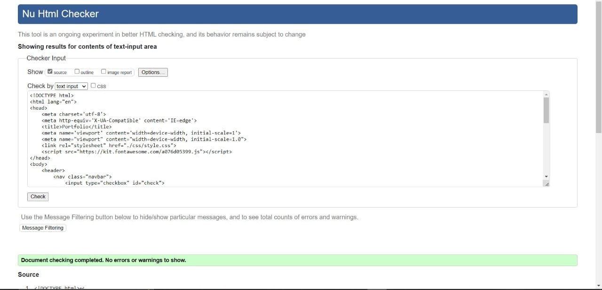
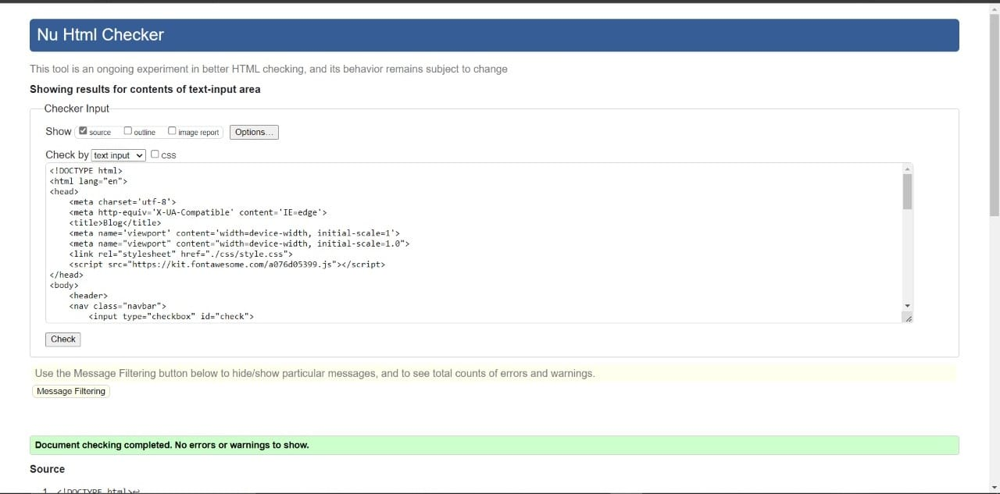
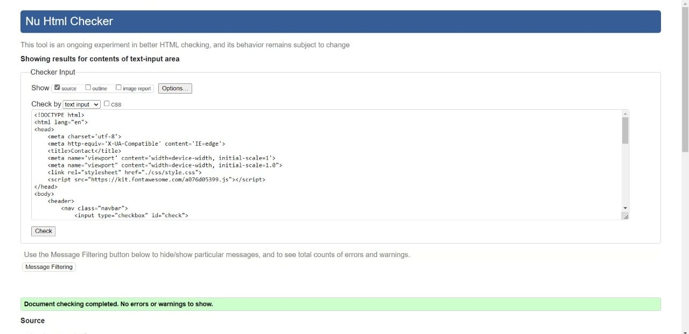
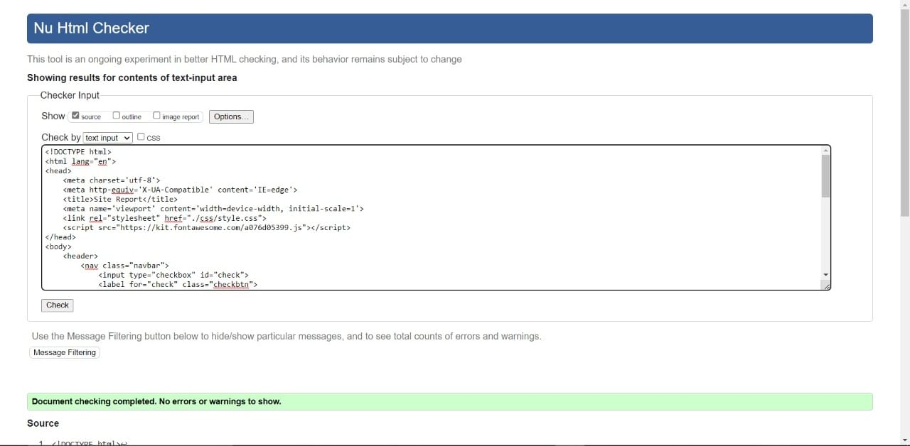

As a beginner HTML student I tried to make this website as good as possible. I used the various elements that were taught in class for the making of HTML. I pictured my final website looks in my mind and started making it step by step. Finally after a long time I was able to make a website and call it mine. As I progressed with this website I was getting more familiar with the elements of HTML and CSS. I learn many new things during the making of this website. I learnt the usage of sections, classes, divisions and sub-divisions. I also learnt various formatting methods in this website. Lastly, I'd like to thank Mr. Amit Thappa for giving us the important theory and practical knowledge about HTML and CSS. I doubt if I could've made this website without the knowledge provided by him.
For the making of this site I used a color combination of mainly three color which are Black, White and Light Blue. I thought they went well with each other and made my website look better. I used two types of font family out of which Cambria was used for the navigation bar and Century was used for the rest of the items. The color combinations I chose were taken from the website "https://colorhunt.co/" which I personally would suggest any web developer to use as it provides the used with countless number of color combinations. Further I used a pink flower background for the home page as I like pink flowers and thought it went well with the color combinations I chose. The image was take from "https://images.pexels.com/photos/1408221/pexels-photo-1408221.jpeg?cs=srgb&dl=pexels-irina-iriser-1408221.jpg&fm=jpg". Lastly the place holder images which I used in the portfolio page have been taken from "https://socialistmodernism.com/wp-content/uploads/2017/07/placeholder-image-300x225.png". This website has a number of placeholder images and also provides the user with a random placeholder images with any resolutions required. This way I tried to make my website look better and give a catchy appearance.
INDEX
PORTFOLIO
BLOG
CONTACT
SITE REPORT
During the making of this website I faced many difficulties. I had trouble in the creation of portfolio page as I was struggling to import images and resize them to the desired resolutions. Due to the lack of complete knowledge I also faced trouble in the formation of the hamburger icon. The concepts that I was comfortable with felt like an easy task and made me enjoy the creation of this website. Lastly, I also faced little difficulty in the formatting of the website but because of the knowledge gained theoretically I was able to overcome my hardships.